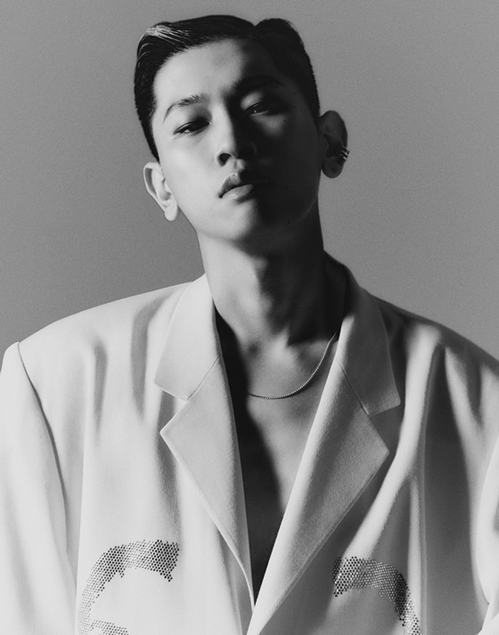

크러쉬는 대한민국의 가수, 작곡가이다. 프로듀서이기도 하다.
중학교 1학년 때부터 흑인음악에 입문하기 시작해 혼자 독학으로 작사, 작곡을 공부했다고 한다.
2012년에 치타와 '마스터피스'라는 혼성 그룹으로 데뷔했으나 아무도 모르게 그냥 묻혔다.
그 후 공연을 위해 그랜드라인파티에 갔다가 Zion.T를 만나면서[6] VV:D 크루[7]에 가입하게 되었고 곧 아메바 컬처에도 들어가게 되었다.
솔로 데뷔 전까지 Zion.T나 슈프림팀, 사이먼 도미닉, 다이나믹 듀오의 앨범에 참여를 하며 주목을 받았다.
그중 대표적인 곡으로는 DJ Friz와 함께 피처링한 다이나믹 듀오의 '거품 안 넘치게 따라줘', Zion.T의 '뻔한 멜로디', 슈프림팀의 '그대로 있어도 돼' 같은 곡들이 있다.
예명을 크러쉬로 지은 이유는 크러쉬의 뜻인 '부수다, 반하다'는 뜻에서 착안해 지었다고.
그래서 1집 이름이 'Crush On You(너에게 반하다)'라고 한다... 는 방송용이고
사실은 본인의 본명 신효섭에서 따와 신효섭→신셥→시셥→C-sub을 예명으로 하려고했는데
크러쉬가 워낙 악필이라 C-sub이라고 적은 종이를 친구에게 보여줬더니 알아보지 못하고 "이거 crush라고 적은 거냐"고 해서 crush가 맘에 들어 예명으로 정한 거라고 한다.
별명은 크롱이다. 개코 아들이 크러쉬 얼굴을 보고 지어주었다고 한다.
유희열의 스케치북에서 앞으로의 꿈으로 본인 아버지와 같이 자식들과 친구 같은 아빠가 되고 싶다고 했다.
지금은 약재 수입업을 하시는 아버지 역시 왕년에 가수 지망생이었다고.
아버지 덕분에 각종 음악을 어려서부터 많이 접할 수 있었다고 한다.
송대관의 히트곡 '해뜰날'의 작곡자 신대성이 고모부라고 한다. 친누나도 nov라는 이름으로 음악을 한다.